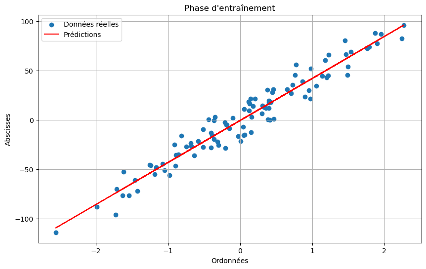
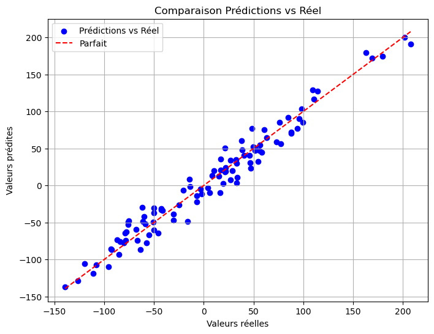
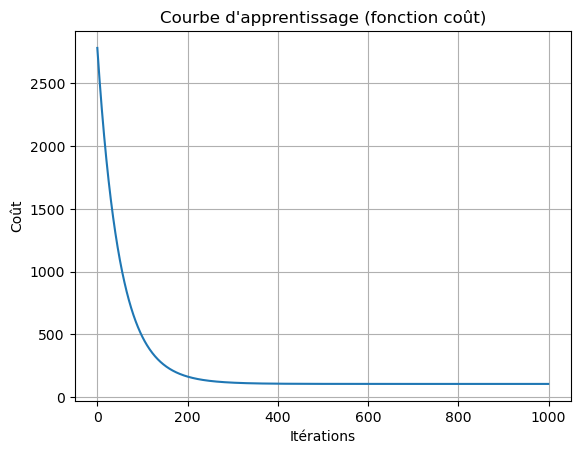
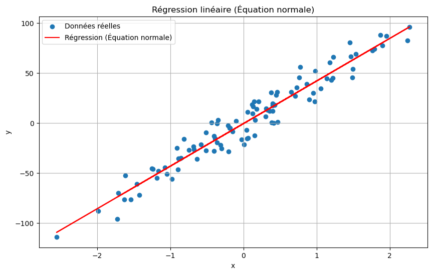
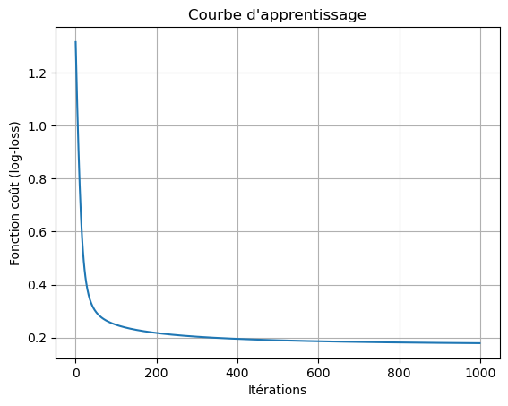

Mes Projets et Concepts en Machine Learning & Deep Learning
Accès aux fichiers de projet
Retrouvez tous mes fichiers (notebooks, démonstrations, etc.) dans le dossier Google Drive ci-dessous :
Concepts Appris
Numpy
Bibliothèque fondamentale pour le calcul numérique avec Python. Utilisée pour manipuler efficacement des tableaux multidimensionnels et effectuer des opérations mathématiques rapides.
Pandas
Bibliothèque de manipulation de données. Elle permet de lire, nettoyer et analyser des ensembles de données sous forme de DataFrame.
Seaborn
Bibliothèque de visualisation basée sur matplotlib. Elle simplifie la création de graphiques statistiques comme les distributions, les boxplots ou les cartes de chaleur.
Scikit-learn
Bibliothèque de référence pour le machine learning en Python. Elle offre des outils pour la régression, la classification, la réduction de dimension, etc.
Séries temporelles
Analyse de données chronologiques pour détecter des tendances, des cycles ou des anomalies dans le temps.
Mes mini - Projets
1. Regression Linéaire
Objectif : Estimer le prix d'une maison en fonction de variables telles que la surface, le nombre de chambres, etc.
Techniques utilisées : Régression linéaire, Pandas, Scikit-learn, Matplotlib
Description : Nettoyage des données, visualisation de la corrélation entre les variables, construction et évaluation d'un modèle de régression linéaire simple.

1. Prédire le prix d'une maison
Objectif : Prédire une variable cible à partir d'une seule variable explicative.
Techniques utilisées : Régression linéaire, Pandas, Scikit-learn, Matplotlib
Description : Nettoyage des données, visualisation de la corrélation entre les variables, construction et évaluation d'un modèle de régression linéaire simple.
2. Régression polynomiale
Objectif : Améliorer la précision du modèle en modélisant les relations non linéaires.
Techniques utilisées : PolynomialFeatures, régression linéaire
Description : Transformation des variables pour créer des relations polynomiales, ajustement du modèle aux données non linéaires.
3. Régression multiple
Objectif : Prédire une variable cible à partir de plusieurs variables explicatives.
Techniques utilisées : Pandas, Sklearn, statistiques de corrélation
Description : Analyse multivariée, détection de multicolinéarité, entraînement d’un modèle de régression multiple.


4. Équation normale
Objectif : Calculer les coefficients optimaux d’un modèle de régression sans utiliser de gradient.
Techniques utilisées : Formule de l'équation normale avec Numpy
Description : Implémentation de la solution analytique pour la régression linéaire.

5. Régression logistique
Objectif : Prédire une variable binaire (0 ou 1), par exemple si un email est spam ou non.
Techniques utilisées : LogisticRegression, courbe ROC
Description : Préparation des données, entraînement du modèle, évaluation via précision, rappel et courbe ROC.

6. Détection de spams
Objectif : Classifier automatiquement les SMS comme spam ou non spam.
Techniques utilisées : NLP, TF-IDF, Naive Bayes
Description : Nettoyage de texte, vectorisation, modélisation avec un classifieur bayésien.
.png)
7. Réseaux de neurones artificiels (ANN)
Objectif : Créer un modèle d'apprentissage profond pour une tâche de classification.
Techniques utilisées : Couches denses, fonction d'activation Sigmoide
Description : Construction d’un réseau de neurones entièrement connecté, entraînement sur des données normalisées, évaluation des performances sur un jeu de test.
.png)
.png)
.png)